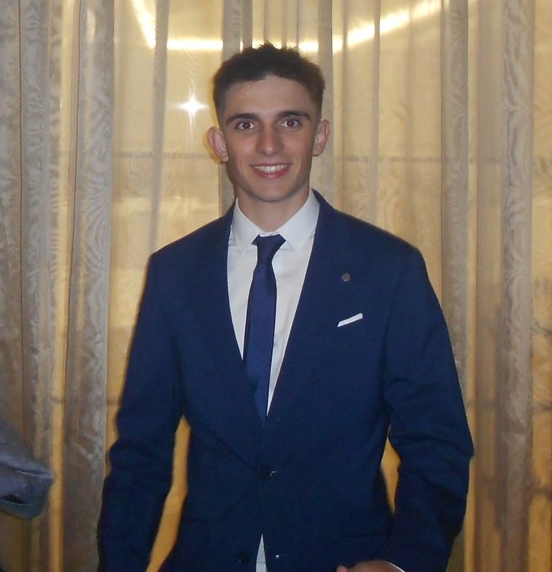

Apps for Good
Participação como finalista no programa Apps for Good, aplicando tecnologia à resolução de problemas reais e desenvolvendo competências de apresentação, ideação e trabalho em equipa.
Estudante de Engenharia Informática Aplicada
Curioso, dedicado e focado em aprender. Procuro aproveitar todas as oportunidades para evoluir e contribuir com disciplina, espírito de equipa e capacidade de adaptação.

Telefone: +351 928 022 760
Email: bernardo.oliv@ua.pt
Localização: Ílhavo, Portugal
Data de nascimento: 16.10.2006
Este site reúne o meu percurso académico, competências técnicas, experiências de voluntariado, participação em projetos e atividades desportivas. O objetivo é apresentar de forma clara quem sou, o que aprendi e como essas experiências contribuem para o meu desenvolvimento em Engenharia Informática Aplicada.
Sou estudante de Engenharia Informática Aplicada na Escola Superior de Tecnologia e Gestão de Águeda - UA. O meu percurso no desporto federado e em projetos internacionais ajudou-me a desenvolver disciplina, espírito de equipa, respeito pelos outros e capacidade de adaptação.
Uma apresentação breve do meu percurso, interesses e objetivos profissionais.
Formação atual na ESTGA-UA, com aprendizagem em programação, resolução de problemas e trabalho por projetos.
Participação num projeto de sustentabilidade, contacto intercultural e comunicação em contexto internacional.
Prática federada desde 2014, com foco em disciplina, resiliência e gestão de tempo.
Escola Superior de Tecnologia e Gestão de Águeda - UA
2024 - AtualidadeEscola Secundária Gafanha da Nazaré (ESGN)
2021 - 2024Participação como finalista no programa Apps for Good, aplicando tecnologia à resolução de problemas reais e desenvolvendo competências de apresentação, ideação e trabalho em equipa.
Desenvolvimento de exercícios e pequenos projetos em Html, C, Java e Python no contexto da licenciatura, com foco em lógica, algoritmos e estruturação de código.
Ciclismo federado — estrada, XCO, XCC, XCE e XCM. Prática federada desde 2014, desenvolvendo disciplina, resiliência, espírito de equipa, gestão de tempo e capacidade de superação em contexto competitivo.
Ao longo do meu percurso tenho procurado combinar competências técnicas com responsabilidade, comunicação e capacidade de adaptação. A informática é uma área em constante evolução e acredito que a experiência no desporto, no voluntariado e em projetos internacionais me ajuda a encarar novos desafios com método e persistência.